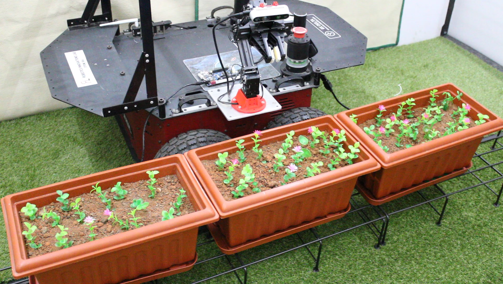
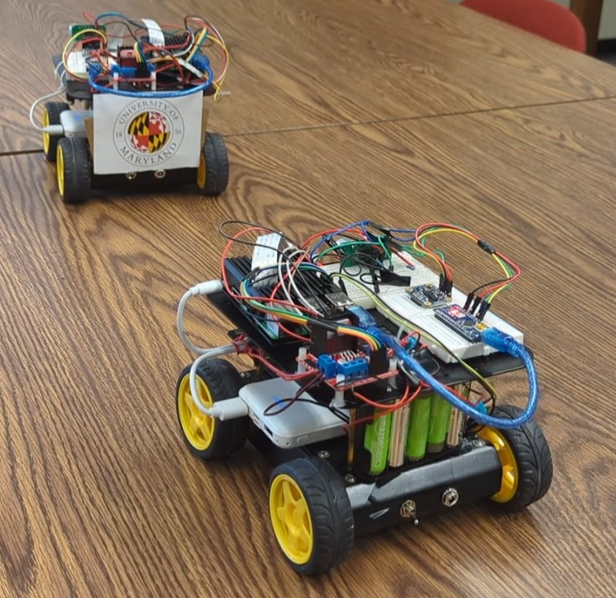
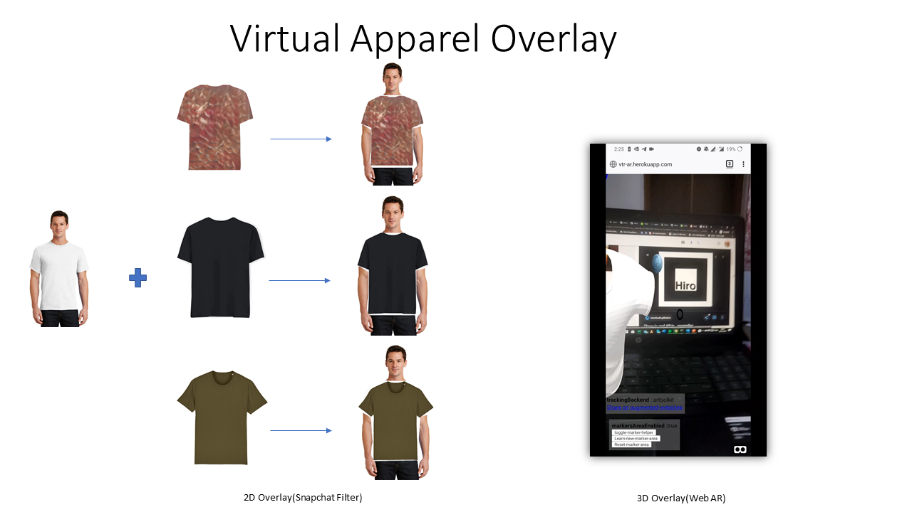
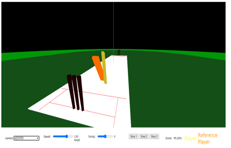

AI & Robotics R&D
I build intelligence that can act in the world.
I’m Tharun—an R&D engineer working across robot learning, embodied AI, and human–robot interaction. I turn emerging models into real systems that perceive, learn, explain, and operate beyond the lab.
EngineerResearcherWriter
Video-action
Egocentric
policies
World models
for robotics
Human–robot
interaction
Selected systems & research
Work that moves
between ideas and reality.
A curated view of the work that best represents how I think: technically deep, systems-oriented, and grounded in the physical world.
Learning systems for robotic manipulation
End-to-end infrastructure spanning teleoperation, automatic data collection, LeRobot-style datasets, ACT and diffusion policies, simulation validation, perception, and deployment on ROS 2 workcells.

02 / RoboticsPrecision agricultural robotics
A manipulator-based perception and actuation system designed to identify and remove weeds while reducing pesticide use in indoor farms.
Action recognition that survives occlusion
Transformer and graph-based temporal models for fall detection across camera views, with systematic occlusion and frame-rate evaluation.

Bio-inspired vehicle platooning
A leader–follower framework for coordinated connected vehicles.
View repository
Virtual try-on
An AI system for visualizing apparel and evaluating personal style in a digital shopping workflow.
View repository
AI cricket coach
Video-based action understanding and WebVR feedback for personalized batting practice.
View repositoryExperience
A research path shaped by deployment.
Present
R&D Engineer · AI & Robotics
Real-world robot learning, deformable-object manipulation, multi-camera perception, learning-policy infrastructure, and ROS 2 deployment.
University of Maryland
Robotics Research
Mobile-robot navigation security, abnormal-behavior detection, and multimodal human–robot interaction for routine tasks.
Indian Institute of Science
Research Assistant
Human-collaborative agricultural robotics, manipulation, and perception-driven precision weeding.
Wipro Innovations Lab
AI Team Lead
Computer vision, mobile AI, egocentric interaction, mixed reality, and rapid prototyping across emerging technologies.
Human in the Loom
Engineering is also a way of seeing.
I write about the systems we build—and the values, assumptions, incentives, and stories we quietly weave into them. Human in the Loom is where my engineering practice meets criticism, philosophy, and public thinking.
About the practice
“A signature in every work.”
I’m interested in the point where intelligence leaves a benchmark and encounters the physical world: noisy sensors, unfamiliar viewpoints, human expectations, and the consequences of action.
My current research interests center on video-action models, egocentric policies, world models for robotics, human–robot interaction, and making robot behavior more explainable.
I hold an M.Eng. in Robotics from the University of Maryland and bring experience across academic research, industrial R&D, and real-world robotics deployment.
Collaborate